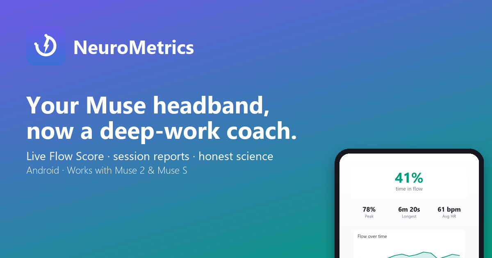

Your Muse headband, now a deep-work coach. See when you're in flow.

Requires a Muse 2 or Muse S EEG headband (sold separately) and an Android phone with Bluetooth.
No consumer headband can detect flow directly, and we won't pretend otherwise. The Flow Score estimates the conditions researchers link to flow: engaged, steady, moderately aroused attention. Every metric in the app shows how it's calculated. See the research behind each metric.
NeuroMetrics works fully on your device without an account. If you choose to sync, your data is encrypted in transit, never sold or used for advertising, and you can delete it at any time.
NeuroMetrics is not a medical device and does not diagnose, treat, cure, or prevent any medical condition. Consult a healthcare professional for medical advice, diagnosis, or treatment. NeuroMetrics is an independent app and is not affiliated with Interaxon Inc. Muse is a trademark of Interaxon Inc., referenced only to indicate device compatibility. Operated by Declan Curran, New South Wales, Australia.